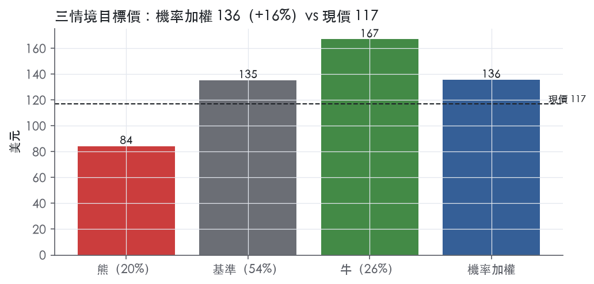
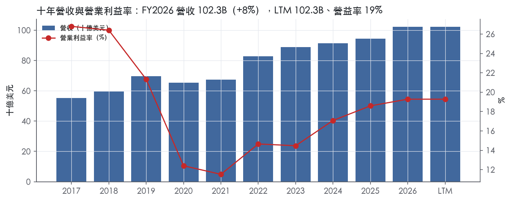
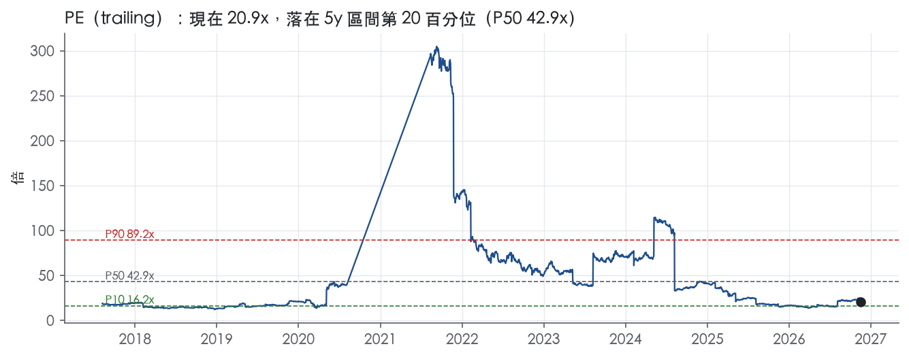
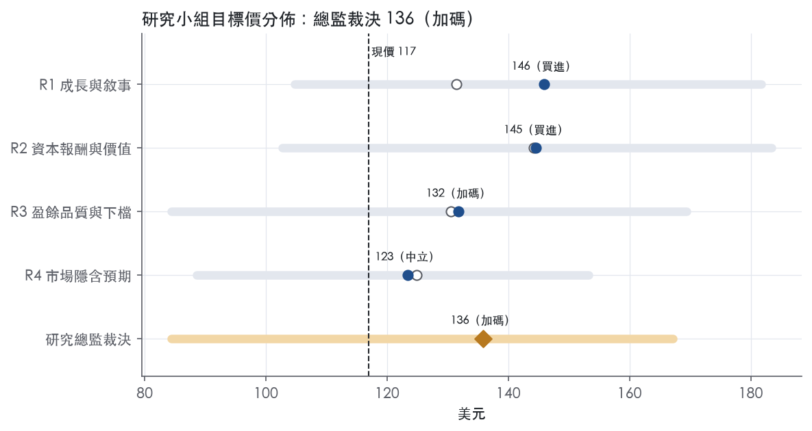
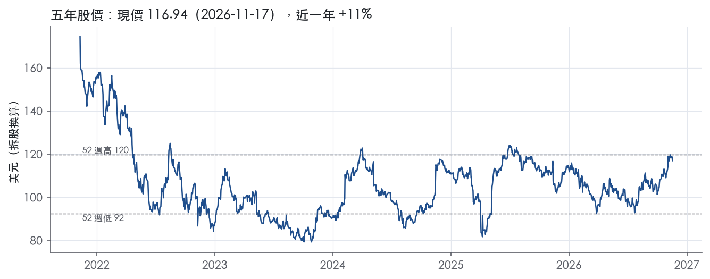

評等總表 › 通訊服務 › DIS
盈餘複利撐報酬、倍數持平，溫和看多｜評等 加碼｜目標價 136
| 報告日 | 評等 | 目標價 | 當時股價 | 超額報酬 |
|---|---|---|---|---|
| 2026-11-17 | 加碼 | 136 | 117 | +9.4% |
| 2026-10-09 | 買進 | 135 | 108 | +18.3% |
| 快評 | 動作 | 結論 |
|---|---|---|
| 2026-11-17 | 維持 | 分部營業利益超預測、EPS略低，維持買進 |
| 評等 | 加碼 |
| 12 個月目標價 | 136 美元 |
| 現價 | 116.94 美元（2026-11-17） |
| 預期報酬 | 股價 +16.1%＋股息 1.3%＝總報酬 +17.4%；同業籃門檻 8.0%，超額 +9.4% |
| 估值方法 | P/E 17.0x，套在第 5–8 季的EPS（也就是一年後的未來四季） |
| 三情境 | 熊 84／基準 135／牛 167 |
| 研究流程 | 四位研究員兩輪辯論＋研究總監裁決 |
| 資料來源 | SEC EDGAR XBRL、Tiingo、FRED（全免費） |
盈餘複利撐報酬、倍數持平，溫和看多（研究總監裁決，四位研究員兩輪辯論後）
評等 加碼｜12 個月目標價 136 美元（總監三情境機率加權 133 與研究員中位數 138 各半）｜現價 116.94（2026-11-17）
預期報酬：股價 +16.1%＋股息 1.3%＝總報酬 +17.4%。同業籃門檻 8.0%，超額 +9.4%。
估值方法：P/E 17.0x，套在第 5–8 季的EPS（也就是一年後的未來四季）。三情境：熊 84（20%）／基準 135（54%）／牛 167（26%）。
什麼會讓研究總監改變看法：FY2027Q2 Experiences 營業利益年減，或公司下修雙位數調整後 EPS 指引，倍數退到 16x、轉中性；FY2027 調整後與 GAAP EPS 差距 ≤1.00 且非攤銷調整項每股 <0.10，回到 18x。
| 過去四季（實際，FY2026Q4） | 未來四季 | 第 5–8 季 | 第 9–12 季 | |
|---|---|---|---|---|
| 營收（B） | 102.3B | 106.9B | 113.4B | 119.6B |
| 營收成長 | 8.4% | 4.5% | 6.0% | 5.5% |
| 營業利益率 | 19.3% | 16.8% | 17.4% | 17.8% |
| EPS（美元） | 5.60 | 7.03 | 7.96 | 8.84 |
| EPS 成長 | -18.2% | 25.5% | 13.2% | 11.0% |
| 每股股息（美元） | — | 0.00 | 0.00 | 0.00 |
| P/E（現價） | 20.9x | 16.6x | 14.7x | 13.2x |
| 股息殖利率（現價） | 1.3% | — | — | — |
過去四季為申報數字；預測為研究總監的假設、程式計算。倍數與殖利率都用現價計算，用來看現價對應各期獲利的高低。
| 項目 | 上次（2026-10-12） | 這次（2026-11-18） | 變動 |
|---|---|---|---|
| 評等 | 買進 | 加碼 | 變動 |
| 機率加權目標價（美元） | 135 | 136 | +0.6% |
| 超額報酬 | 18.3% | 9.4% | -8.9 pp |
| 目標倍數 | 18x | 17x | — |
| 未來四季營收成長 | 5.5% | 4.5% | -1.0 pp |
| 未來四季營益率 | 16.1% | 16.8% | +0.7 pp |
| 未來四季 EPS（美元） | 6.72 | 7.03 | +4.8% |
| 熊／基準／牛機率 | 23／50／27 | 20／54／26 | — |
程式計算；「未來四季」各自從當次報告的資料起點算。研究總監逐點說明見第八章「與上次報告比較」。
| 情境 | 機率（歷史） | 故事 | 未來四季營收成長 | 第 5–8 季營益率 | 倍數 | 目標價 | 股價漲跌 |
|---|---|---|---|---|---|---|---|
| 熊 | 20%（18%） | 對應風險表第 1 條（衰退壓低樂園、廣告、訂閱）與第 3 條（線性萎縮、DTC 獲利性），疊加體育版權固定成本；谷底在 y2、回購被砍，倍數回 10 年 trailing P10 14.6x 附近 | 1.0% | 14.8% | 14.0x | 84 | -27.8% |
| 基準 | 54%（54%） | 53 週 lap 後營收中個位數，GAAP 等價利潤率每年擴張約 0.6pp，縮股 2%，倍數持平於市場現付水準 | 4.5% | 17.4% | 17.0x | 135 | 15.8% |
| 牛 | 26%（28%） | Doomsday 帶動 Marvel 全通路變現、ESPN 體育市場集合吸收版權成本、SVOD 利潤率加速，GAAP 與調整後差距收窄，倍數到前瞻帶 P10–P25 中段 | 6.0% | 18.6% | 19.0x | 167 | 42.9% |
目標價由程式依研究總監的驅動與倍數計算；機率由研究總監給定。括號內是歷史頻率：把這檔股票過去十年 12 個月報酬的波動形狀，置中在基準情境，結果落在各情境附近的比例。

四位研究員用不同方法各自估值，回應研究總監的質疑後交出第二輪，最後由總監逐點裁決。各研究員的主張見第七章，裁決理由見第八章，完整論證見《研究底稿》。
| 立場（一輪→二輪） | 加權目標價（一輪→二輪） | 評等（一輪→二輪） | 第二輪倍數 | 熊～牛目標價 | |
|---|---|---|---|---|---|
| R1 成長與敘事 | 看多→中性 | 131→146 | 加碼→買進 | 10.3x | 105～182 |
| R2 資本報酬與價值 | 中性→中性 | 144→145 | 買進→買進 | 10.5x | 103～183 |
| R3 盈餘品質與下檔 | 中性→中性 | 131→132 | 中立→加碼 | 17.0x | 84～169 |
| R4 市場隱含預期 | 中性→中性 | 125→123 | 中立→中立 | 14.5x | 89～153 |
| 研究總監裁決 | 看多 | 136 | 加碼 | 17.0x | 84～167 |
目標價由程式依各自的驅動與倍數計算；評等＝機率加權總報酬 − 同業籃門檻。
Walt Disney Company 是一家多元化的全球娛樂公司，營運分為 Entertainment、Sports、Experiences 三個分部¹。公司靠 IP 內容（電影、劇集、體育版權、主題樂園角色授權）同時賺消費者的訂閱費、廣告費、門票與周邊消費，再把同一組 IP 在串流、電視、電影院、樂園、消費品之間重複變現。FY2026 總營收 102.34B 美元，年增 8.4%（dv 成長率）。FY2026 第四季營收年增 16% 至 25.9B 美元，受惠於多出一週（53rd week）的營運天數²。
三個分部規模與性質差異大，Entertainment 是內容與串流引擎、Sports 是體育版權變現、Experiences 是樂園與消費品現金牛。Entertainment 分部涵蓋公司非體育類的全球電影與劇集製作發行業務，包含串流服務（Disney+、Hulu 的 SVOD；Hulu Live TV 與 Fubo 的 vMVPD，公司持有 Fubo 約 70% 股權）、內容銷售（電視/VOD 授權、戲院發行、家庭娛樂發行）、以及線性頻道（國內 ABC Network、Disney/Freeform/FX/National Geographic 頻道與八家自有電視台；國際約 180 個頻道，涵蓋約 30 種語言、170 個國家/地區）¹。FY2026 全年 Entertainment 營收 46,562M 美元，年增 10%，營運利益 5,443M 美元，年增 16%（is.revenue、dv 均為新聞稿數字）²。Sports 分部全年營收 18,632M 美元，年增 5%，營運利益 3,094M 美元，年增 7%²；10-K 原文對 Sports 分部細項業務描述未在本次摘錄的 Item 1 段落中出現，10-K 未揭露更多細節。Experiences 分部全年營收 39,566M 美元，年增 9%，營運利益 11,191M 美元，年增 12%，是三個分部中營運利益率最高的業務²。公司自 FY2027 起會把目前歸在 Experiences 下的消費品授權與出版業務（Merchandise Licensing and Publishing）改記在 Entertainment 分部下¹。公司在 2026 年 9 月 30 日把持有的 A+E Global Media 50% 股權以約 1.3B 美元現金出售給 Hearst Corporation 關係企業¹。
客戶端分三條線——訂閱戶、廣告主、樂園遊客——通路涵蓋自有 DTC 平台、MVPD/vMVPD 轉播商、戲院、零售與自家樂園/郵輪。Entertainment 的收入來源包括訂閱與聯盟費（DTC 訂閱戶、MVPD 轉播商付費）、廣告、電視/VOD 與家庭娛樂發行授權金、戲院租金等¹。線性頻道業務的收入主要來自聯盟費與廣告，公司國內各主要品牌頻道的訂戶數約 5,400 萬（以 Nielsen 2026 年 9 月估計為準），ABC Network 透過約 245 家地方加盟台與 8 家自有電視台覆蓋近 100% 美國電視家庭¹。公司自有 8 家電視台，其中 6 家位於美國前十大電視家庭市場，合計覆蓋約 20% 美國電視家庭¹。家庭娛樂發行透過 Apple、Amazon 等電子平台及 Comcast、DirecTV 等 MVPD，實體發行則授權第三方經銷給 Walmart、Amazon 等零售商¹。地區上，國際線性頻道覆蓋約 170 個國家/地區、30 種語言、約 180 個頻道，顯示公司國際化程度高，但 10-K Item 1 此段未揭露各地區營收占比。
過去四個財季營收持續加速成長，FY2026Q4 受 53rd week 額外一週營運天數推升年增率明顯跳升。FY2026Q1（截至 2025-12-27）營收 25.98B 美元，年增 5.2%，EPS 1.34（is/dv 資料包）。FY2026Q2（截至 2026-03-28）營收 25.17B 美元，年增 6.5%，EPS 1.27（資料包）。FY2026Q3（截至 2026-06-27）營收 25.25B 美元，年增 6.8%，營益率升至 22.0%；公司在新聞稿中表示「本季總分部營業利益小幅超越我們先前的指引」，並重申 FY2026 調整後 EPS 成長約 12%（不含 53rd week）或約 16%（含 53rd week）、Q4 總分部營業利益約 4.9B 美元、全年回購目標至少 9B 美元³。FY2026Q4（截至 2026-10-03）營收 25,947M 美元，年增 16%，稀釋 EPS 1.51、調整後 EPS 1.77；全年營收 102,344M 美元，年增 8%，調整後 EPS 7.02，年增 18%²。公司在 FY2026Q4 新聞稿中指引「我們持續預期 FY2027 調整後 EPS 將呈雙位數成長，不含 53rd week 影響」²。
公司將成長策略歸納為三大支柱：投資能夠突破、建立連結、長久留存的 IP 與創意；運用先進技術強化敘事並提升變現與回報；以「One Disney」營運模式更無縫、更有吸引力地觸及全球更多消費者²。公司具體舉例：Toy Story 5 在 Disney+ 首映五天吸引 2,000 萬次觀看，38 部 MCU 電影全球票房累計超過 35B 美元，Marvel 是公司全球零售銷售前列的消費品品牌之一²；在樂園端規劃 Avengers Campus 於 2028 年規模翻倍、香港迪士尼樂園興建 Avengers 塔樓、上海迪士尼樂園新增 Spider-Man 雲霄飛車主題園區²。ESPN 方面公司強調其「體育市場集合」(marketplace of sports) 策略，已與 NFL、MLB、FOX One、CW Network 建立合作，並取得新擴編 24 隊 College Football Playoff 的獨家轉播權延伸²。公司並表示未來三年計畫將 Disney+ 上的本地原創劇集數量約增加兩倍，以在國際市場帶動新用戶與降低流失率³。Disney 的核心護城河是幾十年累積的 IP 資產庫可以跨串流、線性電視、戲院、樂園、消費品五個通路重複變現，這解釋了為何 Experiences 分部營運利益率遠高於內容分部。FY2026 全年三個分部營收與營益同步成長，顯示 One Disney 策略在財務上開始見效，但 Sports 分部 FY2026Q3 單季營運利益仍年減 17%，反映體育版權成本上升對短期利潤率的壓力尚未完全消化。整體來看，公司把資本配置重心放在 IP 再利用與樂園擴建上，串流業務的邊際貢獻正在轉正，是未來評價能否重新往上修正的關鍵變數。

依本章評級標準，我們沒有把握迪士尼未來 5 年 ROIC 能穩定高於資本成本，因此評為「無」護城河。這不代表 IP 沒有價值；問題在集團層級的超額報酬被龐大的資本基礎與萎縮中的線性電視稀釋。十年平均 ROIC 10.0%，資本成本代理值 10.1%，兩者大致打平。趨勢判為變寬，因為 ROIC 已從十年低點 6.1%回升到 FY2025 的 12.2%與 FY2026 的 10.0%。若 ROIC 連續數年站穩資本成本之上，評級可上調為窄。
有充分證據的來源只有無形資產，其次是 IP 跨通路攤提帶來的成本優勢。
無形資產。 Disney, Pixar, Marvel, Star Wars and National Geographic branded programming are all top-level selections or "tiles" within the Disney+ interface⁴。The library of content includes approximately 5,400 live-action film titles and 470 animated film titles, as well as more than 200 episodic series with four or more seasons⁴。The Company has a significant library of content spanning approximately 100 years of production history⁴。Generally, the Company has full production and distribution rights to its IP⁴。Entertainment 分部收取 Experiences 分部的內部分攤收入，用來反映 royalties on consumer products merchandise licensing revenues generated on IP created by the Entertainment segment⁴。這組品牌與片庫是百年累積的結果，競爭者無法靠砸錢在短期內複製，這是迪士尼真正的優勢所在。
成本優勢。 Costs to produce content are generally capitalized and allocated across Entertainment's businesses based on the estimated relative value of the distribution windows⁴。電子版家庭娛樂通常在院線上映後約兩個月推出，實體發行則在三到四個月內開始⁴。替第三方製作的內容，在獨家期結束後 the rights revert back to the Company⁴。同一筆固定內容成本可以分攤到院線、串流、授權、樂園與消費品等更多收入流，單位內容成本因此低於只有單一通路的對手。
數字上看不到護城河：ROIC 沒有長期高於資本成本，利潤率的波動也不小，這與 IP 強勢的敘事直接衝突。ROIC 有資料的 9 年中，只有 3 年高於資本成本，十年平均減資本成本為 -0.1%。營業利益率十年平均 18.3%，標準差 5.1%，區間 11.5% 至 26.8%；FCF 利潤率標準差 5.2%，最低 1.3%。這種波動幅度不是寬護城河該有的穩定度。
斷層出現在 FY2019：ROIC 從 FY2018 的 21.7%降到 11.9%，淨負債同期從 16.72B 美元升到 41.57B 美元。我們推論，資本基礎擴張的時點與 FX、National Geographic、Twentieth Century Studios 等品牌併入版圖相符，買進來的 IP 墊高了分母，至今沒有被利潤追上。
另外，資本成本門檻有一部分來自目前偏高的 10 年債殖利率 5.12%。利率回落時門檻會下降，但我們不以利率假設替評級加分。我們讓 ROIC 決定評級，不讓品牌敘事蓋過數字。
最大的侵蝕來源是線性電視通路的結構性萎縮，其次是廣告與創意資源的競爭，以及維持 IP 所需的持續高額再投資。
目標倍數相對同業應該持平，不給溢價。理由是 ROIC 十年平均只與資本成本打平，在 ROIC 證明能持續高於資本成本之前，成長本身不創造超額價值，溢價沒有依據。目前 EV/EBITDA 9.6x 已低於 5 年 P10 的 9.7x，市場已反映這層疑慮，因此也不建議再額外折價；若 ROIC 站穩資本成本之上，可回頭上修評級與倍數。
| 指標 | 最新 | 十年平均 | 標準差 | 最低 | 最高 |
|---|---|---|---|---|---|
| ROIC | 10.0% | 10.0% | 4.7% | 6.1% | 21.7% |
| 營業利益率 | 19.3% | 18.3% | 5.1% | 11.5% | 26.8% |
| FCF 利潤率 | 10.3% | 8.0% | 5.2% | 1.3% | 16.5% |
| ROE | 8.9% | 8.3% | 8.8% | -3.3% | 28.0% |
程式計算。資本成本代理值（10 年債＋5%）：10.1%；ROIC 平均減資本成本：-0.1%；ROIC 有資料的 9 年中，高於資本成本 3 年。
LTM 營業現金流／淨利 1.95x、自由現金流／淨利 1.07x，兩項均為綠燈，近三年平均（2.07x／1.20x）同樣穩定在 1 倍以上。唯一黃燈是稀釋股數年變動（LTM +0.9%，十年平均 +1.3%），加上程式標出的 FY2019→FY2020 淨利率跳動紅旗屬於歷史事件、非近期體質問題，整體評級落在中高，但不給「高」是因為稀釋股數的黃燈與回饋比率已逼近100%上限，代表資本配置彈性在收窄。
現金持續跑在盈餘前面，LTM 營業現金流 19.27B 對淨利（9.90B）換算出的 1.95x 倍數是近十年次高，僅次於FY2017-2019區間的高基期。應計比率 LTM -4.6%、近三年平均 -4.0%，皆優於十年平均 -2.5% 且遠低於紅線 5.0%，代表盈餘沒有靠應計項目灌水，實際上現金流認列比淨利更保守。FCF／淨利 1.07x（LTM）顯示即使扣掉資本支出（FY2026 資本支出／營收已升至 8.5%，為十年最高，年度表），自由現金流仍能覆蓋淨利，資本開支擴張沒有吃掉盈餘品質。存貨成長減營收成長為 -5.8pp（FY2026），營運資金不是拖累現金的因子。
FY2026 全年 GAAP 稀釋 EPS 為 5.63 美元，較 FY2025 的 6.85 美元下滑18%，但調整後（Excluding Certain Items）EPS 為 7.02 美元，較去年 5.93 美元成長18%，GAAP 與非 GAAP 方向完全相反²。公司揭露的調整基礎之一是第53週多出的一週營運，估計貢獻全年調整後 EPS 約 0.17 美元²，第四季 GAAP 稀釋 EPS 1.51 美元對比調整後 1.77 美元，差距同樣顯著²。新聞稿本身只揭露「Total segment operating income」「Diluted EPS excluding certain items」「Free cash flow」為非 GAAP 指標，並說明最可比 GAAP 數字分別是稅前所得、GAAP 稀釋 EPS、營業現金流²，但本節拿到的新聞稿節錄未附逐項調整表（如重組費用、無形資產攤銷、投資減損等金額），故無法逐項拆解，只能確認「53週效果」是已知的一次性正項，其餘調整項金額不在本次節錄範圍內，無法照抄也不應臆測。GAAP與非GAAP的18%方向反轉主要落在53週與其他未揭露調整項之間，估值應以此警示非GAAP的「成長性」被墊高。
槓桿與付息能力都在安全區：LTM 淨負債／EBITDA 1.49x（綠燈，十年平均 1.92x），利息保障倍數 10.4x（綠燈，十年平均 11.6x），顯示公司並非靠舉債支撐盈餘。淨負債本身從 FY2025 的 36.33B 回升至 FY2026 的 37.79B（年度表），但相對 EBITDA 的擴張（25.33B）仍維持比例下降趨勢。資本回饋力道偏高：（股利＋回購）／淨利 LTM 90.9%，近三年平均 82.6%，遠高於十年平均 56.9%，代表公司把大部分當期盈餘都還給股東，但尚未超過100%的「舉債回饋」警戒線。稀釋股數年變動由十年平均 +1.3% 轉為近三年 -1.3%（淨減少，代表回購力度夠大），但 LTM 又翻回 +0.9%，這個反轉值得留意，可能反映 SBC 增發（FY2026 SBC／營收 1.6%，為十年最高，年度表）部分抵銷了回購效果。
紅旗一（程式標出）：淨利率 FY2019→FY2020 跳動 -20 個百分點。 年度表顯示 FY2019 淨利 11.05B 到 FY2020 轉為 -2.86B（年度表），對應的是全球主題樂園因疫情停業、GAAP 淨利率從正轉負的歷史事件，本次拿到的 10-K Item 7 節錄並未包含實際 MD&A 文字說明此跳動（節錄內容為目錄與 Item 1 業務描述），故無法照抄原文佐證。但從後續年度（FY2021 起淨利逐年回升至 FY2025 的 12.40B、FY2026 的 9.90B，年度表）可判斷此為一次性外部衝擊，非會計口徑或盈餘灌水問題，對當前盈餘品質評估不構成持續性風險。
黃燈：稀釋股數年變動。 LTM +0.9%雖未達紅線 >3.0%，但方向與近三年平均的淨減少（-1.3%）相反，代表最近一年股數不減反增。結合 SBC／營收已升至十年最高的 1.6%（年度表），較合理解釋是股權獎酬發放速度超過回購沖銷速度，而非業務需要發新股融資，屬可解釋但需持續觀察的假警報偏向，非結構性稀釋風險。
（股利＋回購）／淨利 90.9%，接近但未超過100%。 量化底稿顯示此比率近三年持續墊高（82.6%→90.9%），在槓桿仍處綠燈（淨負債／EBITDA 1.49x）、利息保障仍有10.4x的前提下，尚不構成「舉債發股息」的真問題，但若FCF成長放緩，這個比率會率先轉紅。
估值應以 GAAP 稀釋 EPS（LTM 5.60）為盈餘基礎，非 GAAP 調整後 EPS 7.02 美元中已知有約 0.17 美元來自一次性53週效果，剩餘調整項缺乏原文佐證，不應整筆採用。現金轉換（CFO／NI 1.95x、FCF／NI 1.07x）支撐盈餘品質，不需要對核心現金流打折，但GAAP與非GAAP方向在FY2026反轉18個百分點，提醒分析師在用P/E定價時應優先錨定trailing P/E 20.9x（對應GAAP），而非用調整後EPS推算更低的隱含倍數。槓桿（淨負債／EBITDA 1.49x）與利息保障（10.4x）都未達限制倍數的門檻，不需要因資產負債表而額外壓縮估值乘數。
| 項目 | LTM | 近三年 | 十年 | 燈號 | 規則 |
|---|---|---|---|---|---|
| 營業現金流／淨利 | 1.95x | 2.07x | 1.55x | 綠 | ≥1.00x 綠、<0.80x 紅 |
| 自由現金流／淨利 | 1.07x | 1.20x | 0.76x | 綠 | ≥0.90x 綠、<0.60x 紅 |
| 應計比率（(淨利−CFO)／平均總資產） | -4.6% | -4.0% | -2.5% | 綠 | ≤0.0% 綠、>5.0% 紅 |
| SBC／營收 | 1.6% | 1.5% | 1.1% | 綠 | ≤3.0% 綠、>8.0% 紅 |
| 淨負債／EBITDA | 1.49x | 1.67x | 1.92x | 綠 | ≤1.50x 綠、>3.00x 紅 |
| 利息保障倍數（營業利益／利息） | 10.4x | 9.19x | 11.6x | 綠 | ≥8.00x 綠、<3.00x 紅 |
| 稀釋股數年變動 | 0.9% | -1.3% | 1.3% | 黃 | ≤0.0% 綠、>3.0% 紅 |
| （股利＋回購）／淨利 | 90.9% | 82.6% | 56.9% | 綠 | ≥50.0% 綠、<0.0% 紅 |
| 存貨成長 − 營收成長（FY2026） | -5.8pp | — | — | 綠 | ≤5pp 綠、>15pp 紅 |
程式計算；燈號以 LTM（無則近三年平均）判定。
| 風險 | 觸發指標（看什麼數字、在哪裡看） | 對 EPS 的影響方向與粗略幅度 | 未來 12 個月發生機率 | 出處 |
|---|---|---|---|---|
| 宏觀經濟/消費力下滑拖累樂園到訪、廣告購買與訂閱 | CPI、消費者信心指數、樂園入園人數與廣告營收（季度 8-K 揭露） | 負向，大；三個分部同步受影響 | 中 | 10-K 年報 FY2026 Item 1A（風險因素） |
| Experiences 不可控事件（天災、健康事件、地緙政治）衝擊樂園營運 | 颶風/疫情公告、樂園關閉新聞、Experiences 分部營收與營運利益（FY2026 全年 39.566B／11.191B，8-K） | 負向，大；Experiences 是三分部中營運利益最高者² | 中 | 10-K 年報 FY2026 Item 1A（風險因素） |
| 線性電視結構性衰退、DTC 長期盈利能力不確定 | 國內品牌頻道訂戶數（約 5,400 萬，Nielsen）、Entertainment 分部廣告/聯盟費年增率 | 負向，中；壓縮 Entertainment 傳統收入基礎 | 高 | 10-K 年報 FY2026 Item 1A（風險因素） |
| 外匯波動侵蝕海外樂園與授權金收入的美元計價價值 | 美元指數、EUR/USD、JPY/USD；Disneyland Paris、上海/香港/東京迪士尼授權金揭露 | 負向，中；美元升值時降低美元計價收入⁵ | 中 | 10-K 年報 FY2026 Item 1A（風險因素） |
| FCC 電視執照提前續約程序訴訟與監管變化 | 聯邦地方法院判決日期、FCC 執照續約決定、罰款公告（單次最高逾 400,000 美元） | 負向，小至中；主要是法律/品牌風險而非營收規模⁵ | 中低 | 10-K 年報 FY2026 Item 1A（風險因素） |
宏觀經濟/消費力下滑是公司自己在 10-K 中列為首位的風險，原文明言「經濟活動衰退或通膨條件通常會不利地影響我們產品和服務的需求與/或經營成本」，影響範圍涵蓋樂園入園與消費、DTC 與有線/廣播節目服務的費用收取（包含訂戶數下滑的影響）、廣告購買與價格、授權費⁵。公司也承認「我們減輕這些衝擊的能力有限」⁵。這條風險觸及三個分部，是監測清單的第一優先。
Experiences 不可控事件排第二，是因為 Experiences 是三個分部中營運利益規模最大、利潤率最高的業務（FY2026 全年營運利益 11.191B 美元，年增 12%）²。10-K 原文列舉的不可控因素包括健康事件、短期天氣與長期氣候變化（熱浪、颶風、野火、颱風、洪水、乾旱、海嘯、地震）、國際政治或軍事事件（包含中東與烏克蘭的持續衝突）、恐怖攻擊等，並明確提到「颶風已造成 Walt Disney World Resort 樂園關閉及其他營運衝擊，未來可能再次發生」⁵。COVID-19 的歷史案例被公司自己引用為樂園全面關閉、郵輪暫停、戲院上映延期的前例⁵，顯示此類事件一旦發生，對 EPS 的衝擊是全分部性、非線性的。
線性電視結構性衰退與 DTC 長期盈利能力不確定排第三，機率最高因為這是已經在發生、且會持續的趨勢，不是單一事件。10-K 原文指出「媒體產業的這些發展已經削弱了部分線性網路的廣告與聯盟費收入，並已導致、未來也可能導致特定資產的減損」，同時承認「無法保證 DTC 模式及我們未來可能發展的其他商業模式會維持獲利，或長期而言能像我們過去的商業模式一樣有利可圖」⁵。觸發指標是國內品牌頻道約 5,400 萬訂戶數（Nielsen 2026 年 9 月估計）¹的季度變化，以及 Entertainment 分部廣告與聯盟費年增率是否持續放緩。
外匯波動排第四。公司海外樂園（Disneyland Paris、香港 48%、上海 43% 持股並合併入帳）與東京迪士尼、OLC 授權金的曝險規模不小，10-K 原文指出「美元升值或維持強勢，會不利地影響我們從其他市場收取及預期收取的美元價值收入，並降低對國內樂園與度假區的國際旅遊需求」，且「雖然我們通常會對沖特定外幣波動風險，但此類對沖活動可能無法實質抵銷匯率波動的負面財務影響」，尤其在美元持續強勢或弱勢的時期⁵。
FCC 電視執照監管訴訟排第五，機率中低但事件具體可監測。2026 年 4 月 FCC 命令公司為所有自有電視台提交提前執照續約申請，公司已於 2026 年 5 月 28 日提交，隨後在 2026 年 8 月對 FCC 提起聯邦訴訟，以第一修正案為由尋求禁止 FCC 的提前執照續約程序⁵。10-K 也提到播送「不雅」內容的罰款可達每次超過 400,000 美元⁵。這條風險對 EPS 的直接金額影響偏小，但訴訟結果可能牽動公司對 8 家自有電視台（覆蓋約 20% 美國電視家庭）¹的長期經營權，屬於尾部風險。
Sports 分部版權成本上升擠壓利潤率的速度可能快於營收成長。業務概況章指出 FY2026Q3 單季 Sports 分部營運利益年減 17%，反映體育版權成本上升對短期利潤率的壓力尚未完全消化，而全年 Sports 營收年增僅 5%、營運利益年增僅 7%，明顯落後 Entertainment（營運利益年增 16%）與 Experiences（年增 12%）【判，引用業務概況章與 8-K 數字】。若 NFL、College Football Playoff 擴編等版權成本在 FY2027 持續攀升而廣告/訂閱收入未能同步跟上，Sports 分部可能成為拖累整體營運利益成長的環節，但 10-K Item 1A 並未單獨點名體育版權成本為一條獨立風險因子。
FY2026 的 EPS 成長大量依賴 53rd week 與非 GAAP 調整，FY2027 基期效應可能被市場錯誤外推。公司自揭示 53rd week 貢獻全年調整後 EPS 約 0.17 美元，且 FY2026 全年總分部營業利益成長 12%、調整後 EPS 成長 18%，但剔除 53rd week 後實際僅約 10% 與 16%²。公司也明確提示「FY2027 第四季將追平（lap）FY2026 第四季 53rd week 的影響」²。這代表 FY2027Q4 的年增率數字會因為基期多了一週而自動被壓低，若市場或投顧沒有拆分這項技術性因素，可能誤判為基本面轉弱，進而錯殺倍數，這一點 10-K Item 1A 未列為風險因子，但屬於可監測、會動到季度 EPS 年增率解讀的技術性陷阱。
現價 116.94 對應 trailing（過去四季）P/E 20.9x、EV/EBITDA 10.3x、EV/EBITA 12.4x、EV/Sales 2.5x、FCF 殖利率 4.8%。主要估值倍數 P/E 現在 20.9x，落在5 年區間第 20 百分位（P10／P50／P90 = 16.2x／42.9x／89.2x）。

把程式的機械基準預測放到現價下，市場付的前瞻倍數是：P/E（未來四季） 13.8x、P/E（第 5–8 季） 12.4x。反推 DCF 顯示市價隱含未來五年營收年成長 7.1%（WACC 9.0%、終值成長 3.0%、FCF 利潤率 11.7%，SBC 不加回）。
| 倍數 | 現在 | 5 年 P10 | 5 年 P50 | 5 年 P90 | 現在分位 | 全期 P50 |
|---|---|---|---|---|---|---|
| P/E | 20.9x | 16.2x | 42.9x | 89.2x | 19.9% | 24.3x |
| EV/EBITDA | 9.6x | 9.7x | 11.4x | 15.0x | 8.3% | 12.3x |
| EV/EBITA | 11.6x | 11.9x | 14.1x | 18.5x | 6.9% | 15.2x |
| EV/EBIT | 12.3x | 12.8x | 15.8x | 21.8x | 5.0% | 16.3x |
| EV/Sales | 2.4x | 2.2x | 2.5x | 3.1x | 34.5% | 3.0x |
| P/S | 2.0x | 1.8x | 2.1x | 2.6x | 41.5% | 2.5x |
| P/FCF | 19.5x | 19.4x | 26.0x | 170.9x | 10.1% | 54.5x |
trailing 倍數（股價 ÷ 過去四季）；分位以每個交易日計算。
同業籃：DKNG, BRSL, GENI, GDHG, FBYD, FCHL（SIC 7990 同業 13 家中，CY2025 營收最接近的 6 家）。評等門檻 —：同業「倍數不變下持有一年」的隱含報酬中位數（＝ FCF 殖利率 ×(1＋g)＋g，g 為 5 年營收年複合成長並夾在 −2%～8%），每家夾在 0～15%、P/E 低於 5 倍視為資料可疑而排除，中位數再限制在 10 年債到 10 年債＋5% 之間；排除：BRSL（隱含報酬算不出來）、GENI（隱含報酬算不出來）、GDHG（隱含報酬算不出來）、FCHL（隱含報酬算不出來）。
| 代號 | 市值 | 5 年營收 CAGR | 營益率 | ROIC | P/E | 5 年 P/E 中位數 | EV/EBITDA | P/FCF | 隱含報酬 |
|---|---|---|---|---|---|---|---|---|---|
| DIS | 222.2B | 8.7% | 19.3% | 10.0% | 20.9x | 42.9x | 10.3x | 21.0x | 13.1% |
| DKNG | 8.9B | 58.0% | -6.3% | 7.5% | — | — | — | 27.6x | 11.9% |
| BRSL | 1.7B | -4.2% | — | 6.1% | — | — | — | — | — |
| GENI | — | 34.9% | — | -32.7% | — | — | — | — | — |
| GDHG | — | -20.6% | — | -8.6% | — | — | — | — | — |
| FBYD | 0.2B | -2.3% | 3.3% | -47.0% | 160.8x | — | 176.6x | — | -1.4% |
| FCHL | — | 5.4% | — | 579.3% | — | — | — | — | — |
| 同業中位數 | 1.5% | -1.5% | -1.2% | 160.8x | — | 176.6x | 27.6x | — |
全部 trailing，程式以各公司 SEC XBRL 與 Tiingo 行情計算；第一列為本檔。
事後實現前瞻倍數帶（P/E，2018-11-19..2025-11-17）：P10／P50／P90 = 16.0x／47.3x／120.2x。它是每個交易日的股價除以之後四季實際實現的指標；一年後，今天的第 5–8 季正是那時的未來四季，所以這條帶是 12 個月目標價的同口徑倍數。因為用的是事後實際而非當時預期，過去成長超乎預期的公司這條帶會偏低。
程式的機械基準（成長率從過去四季年增率三年收斂到 6%、利潤率持平）用 事後實現前瞻 P/E P50 估值得到 445（280.2%），市場現行前瞻倍數（現價 ÷ 基準 未來四季指標）一年後持平，套在基準 第 5–8 季指標得到 129。這兩個數字只是參考點，不是本報告的目標價；研究員對這個定價的回應在第七章。
下表是每位研究員第一輪（各自獨立）與第二輪（回應研究總監的質疑後）的結果。目標價全由程式依各自的假設計算。
| 立場（一輪→二輪） | 加權目標價（一輪→二輪） | 評等（一輪→二輪） | 第二輪倍數 | 熊～牛目標價 | |
|---|---|---|---|---|---|
| R1 成長與敘事 | 看多→中性 | 131→146 | 加碼→買進 | 10.3x | 105～182 |
| R2 資本報酬與價值 | 中性→中性 | 144→145 | 買進→買進 | 10.5x | 103～183 |
| R3 盈餘品質與下檔 | 中性→中性 | 131→132 | 中立→加碼 | 17.0x | 84～169 |
| R4 市場隱含預期 | 中性→中性 | 125→123 | 中立→中立 | 14.5x | 89～153 |
| 研究總監裁決 | 看多 | 136 | 加碼 | 17.0x | 84～167 |
目標價由程式依各自的驅動與倍數計算；評等＝機率加權總報酬 − 同業籃門檻。
分歧度：第一輪 加權目標價 125～144（區間＝現價的 17%）· 倍數 10.5～19x · 立場 看多×1、中性×3；第二輪 加權目標價 123～146（區間＝現價的 19%）· 倍數 10.3～17x · 立場 中性×4（方向一致）。

| 研究員 | 第二輪主張 | 堅持的理由 |
|---|---|---|
| R1 成長與敘事 | 中性偏多，用 EV/EBITDA 10.3x，主張倍數一年後持平。 | 利潤率仍會擴張，只是延後到 Avengers Campus 等新產能開業後。 |
| R2 資本報酬與價值 | 中性，用 EV/EBITDA 10.5x，認為報酬只在門檻附近。 | 模型目標價疑似沒扣淨負債，核對清楚前他不改看多。 |
| R3 盈餘品質與下檔 | 中性，用 P/E 17x，以 GAAP 等價 EPS 計價。 | 調整後 EPS 高估盈餘，明年營益率只能用 GAAP 等價的 16.8%。 |
| R4 市場隱含預期 | 中性偏空，用 P/E 14.5x，認為市場高估五年營收成長。 | 營收成長低於市場預期，縮股也補不上，持平價 129 美元到不了。 |
每位研究員的逐條回應與完整論證見《研究底稿》（DIS_研究底稿_2026-11-18.docx）。
| 分歧點 | R1 | R2 | R3 | R4 | 什麼資料會分出勝負 |
|---|---|---|---|---|---|
| ① NTM 營收（基準 7.6%） | 4.5%：53 週各分部墊高約 2 ppts，FY2027Q4 lap | 4.5% | 4.0%：再扣 Fubo／NFL 沖銷 | 4.5%：去 53 週後 FY2024–25 僅 2.8%／3.4% | FY2027Q1 營收年增（2027-02） |
| ② Q5–Q8 營收（基準 6.8%） | 6.0%：FY2028 片單與產能 | 5.5% | 5.5% | 6.5% | FY2027Q2 Experiences 營收；FY2028 郵輪、Avengers Campus 開業時點 |
| ③ 營益率口徑與水準 | 19.0／19.2／19.8（分部口徑配 EBITDA） | 18.6／19.2／19.6（分部口徑） | 16.8／17.2／17.5（GAAP 等價） | 17.8／18.5／19.0（調整後口徑） | FY2027 新聞稿第 25–32 頁調節表的非攤銷項金額 |
| ④ 主尺與倍數 | 10.3x EBITDA@ntm | 10.5x EBITDA@ntm；質疑程式未扣淨負債 | 17x eps@q5_q8 | 14.5x eps@q5_q8 | 程式 EV→權益橋接核對；FY2027Q1 後股價對同口徑 EPS 的倍數 |
| ⑤ 股數（基準 −2.9%） | −1.5% | −2.0% | −2.9% | −1.5% | 8-K 第 11–12 頁 FY2027 回購指引；FY2027Q2 10-Q 股數 |
① 裁 R1／R2／R4 的 4.5%。 四人都比基準低超過 3pp，證據共同且日期確定：53 週對三個分部全年營收成長各墊高約 2 ppts，FY2027Q4 要 lap²；去 53 週後 FY2024、FY2025 只有 2.8%、3.4%（–FY2026）。R3 的 4.0% 多扣併表沖銷，但 10-K FY2025 Item 1 已載 Fubo 持股約 70%，併表起點在 FY2026 年初，FY2027Q1 的基期已含 Fubo；Doomsday 12 月 18 日上映落在 Q1、Experiences 全球遊客 +4%²給上半年支撐。本部門營收預測誤差中位數全體偏低（−0.6% 至 −0.9%，記分表），不往更低裁。
② 裁 R1 的 6.0%。 FY2028 是第一個沒有 53 週與併表擾動的乾淨比較年，又有具名供給事件：Frozen 3、Lilo & Stitch 2 在 FY2028，Avengers Campus 2028 年翻倍²。R2／R3 的 5.5% 沒有對這些事件給折價理由；R4 的 6.5% 要片單與樂園同時超額兌現；基準 6.8% 只是機械收斂。
③ 口徑裁 R3；水準 y1 取 R3 16.8%，y2／y3 用 own 17.4%／17.8%（假設）。 基準 19.3% 是總分部營業利益 19,728M 對營收的比率，不含公司費用、TFCF 攤銷與重組，稅前利益只有 14,212M²，所以基準 NTM EPS 8.50 高於公司自己的調整後 EPS 7.02、更遠高於 GAAP 5.63【第 1 頁】。P/E 帶是 GAAP 口徑，EPS 必須用 GAAP 等價口徑才比得上帶，R3 對。R1／R2 的分部口徑在 EBITDA 尺上自洽，主尺回到 P/E 後不能用（見④）；R4 的調整後口徑把每年都在的併購攤銷當成不存在，再用 GAAP 帶去比，分母少扣一次。水準我比 R3 高：FY2024→FY2026 分部營益率 17.1%→18.6%→19.3%（–FY2026），兩年各擴張約 1pp；管理層指引 FY2027 調整後 EPS 雙位數成長（不含 53 週）²，在 4.5% 營收與 −2% 股數下，利潤率不擴張做不到雙位數；R3 的 +0.4／+0.3pp 不到過去兩年實績的一半。本部門營業利益預測全體系統性偏低（總監 −2.8%、R3 −3.5%，記分表），往上修是記分表要求的方向。缺口：調節表不在節錄內，攤銷與重組的拆分交 R3 的主張 1 驗證。
④ 裁 R3 的 17x eps@q5_q8，R1／R2 的 EBITDA 路徑退回。 兩個理由。第一，劇本主尺是 eps@q5_q8，事後實現前瞻帶是唯一能和 q5_q8 倍數直接比的帶；R1 換尺是因為建不出同口徑 EPS，R3 已示範用 GAAP 等價營益率解決。第二，R2 在 V1 的核對我認同：R1、R2 六個情境價都能用「倍數 × NTM EBITDA ÷ 程式期末股數」解釋，看不到淨負債項；程式三年預測表的「股數」欄 NTM 1.85B 高於年度表 FY2026 稀釋股數 1.76B，與縮股方向相反，EV 路徑與 EPS 路徑的股數基準不同。程式組確認橋接（扣 37.79B，NTM 期末 33.61B）前，R1、R2 的 +25% 不可採信——R2 自己也說正確橋接下他的超額只在門檻附近。R4 的 14.5x 退回：他的 EPS 是調整後口徑，現價對它的前瞻倍數高於 14.5x，等於主張市場一年後付得比現在少，而他在 E2 刪掉「成長下修」後沒有任何壓縮理由留下；把 GAAP 帶套到非 GAAP 分母不是錨。17x 的位置：前瞻帶 P10 16.0x 上方、離 P25 22.6x 遠；不給 10 年 trailing P50 24.3x是因 FY2021–FY2024 EPS 1.09–2.72（年度表）撐高了帶，不是利率。四人都沒有用利率把倍數壓到持平以下。
⑤ 裁 R2 的 −2.0%。 量化底稿「LTM +0.9%」被年度表 1.81B→1.76B 與「至少 9B 回購」³推翻，R3 撤回正確，R1／R4 引用它的部分不成立。但 R3 回到 −2.9% 忽略資金面：淨負債 36.33B→37.79B（／FY2026）、A+E 約 1.3B 一次性現金已入帳⁴、資本支出／營收 8.5% 與 SBC／營收 1.6% 都是十年最高。R2 的 −2.0% 同時承認縮股方向與步調放慢，槓桿 1.49x、利息保障 10.4x（財務體質章）說明是步調不是壓力。
漂移與總經偏離。 漂移表無人被標記；R1 加權值 +11% 是換尺加橋接問題，不是靠攏，已在④處理；R4 股數改 −1.5% 有轉發章節為據、不算漂移，但依據已被推翻故不採；drift_rejections 為空。四人皆無總經偏離，本行基準情境直接進基準（成長 1.8、失業率 4.3、WTI 88）；牛情境對應上行路徑（WTI 72、GDP 2.8，實質所得改善利於樂園每人消費），熊情境對應下行路徑（失業率 5.1、美元 124，疊加風險表第 4 條）。10 年債敏感度 t 值 0.0，不用。
| 驅動 | 基準 | 裁決 | 理由 |
|---|---|---|---|
| rev_growth_y1 | 7.6% | 4.5%（R1） | ① 53 週 lap |
| rev_growth_y2 | 6.8% | 6.0%（R1） | ② FY2028 片單、產能 |
| rev_growth_y3 | 6.0% | 5.5%（R4） | 上海 Spider-Man 園區等供給續有⁶，但本行成長 1.8 不支持回 6% |
| op_margin_y1 | 19.3% | 16.8%（R3） | ③ GAAP 等價口徑 |
| op_margin_y2／y3 | 19.3% | 17.4%／17.8%（假設） | ③ 雙位數 EPS 指引所需擴張 |
| da_pct_rev | 5.5% | 5.8%（R1） | 資本支出 8.5% 連兩年高於 D&A，郵輪與園區轉固；只影響 EBITDA、FCF 交叉驗證 |
| share_change_pct | −2.9% | −2.0%（R2） | ⑤ |
其餘（資本支出 8.5%、SBC 1.6%、稅率 23.7%）照基準。
目標倍數 17x eps@q5_q8。 錨是事後實現前瞻 P/E 帶（GAAP 口徑）P10 16.0x 上方、P25 22.6x 以下，與主尺同為「一年後的未來四季」口徑，不需換算。相對市場：現價除以我們的 NTM EPS 由程式輸出，預期落在 P10 附近，所以 17x 是「市場現在對同口徑 EPS 付的倍數一年後持平」，不是擴張；程式持平參考 13.8x／129 用的是分部口徑 EPS 8.50，不能直接比。相對同業：籃子只有 DKNG 有可用倍數，中位數 P/E 160.8x 出自單一小公司，不做同業相對調整。相對自家歷史 P50 不給溢價：護城河章評「無、變寬」，ROIC 10.0%約等於資本成本。交叉驗證看程式列出的隱含 EV/EBITDA 與 P/FCF，對照 trailing EV/EBITDA 5y P10 9.7x／P50 11.4x與現行 10.3x，預期在 P10–P50 之間。
| 情境 | 機率 | 來源 | 相對基準的驅動 | 倍數 | 故事 |
|---|---|---|---|---|---|
| 牛 | 26% | R3 數字＋R1 敘事 | 營收 6.0／7.0／6.5%，營益率 17.8／18.6／19.0% | 19x | Doomsday 帶動 Marvel 全通路變現、ESPN 體育市場集合吸收版權成本、SVOD 利潤率加速，GAAP 與調整後差距收窄，倍數到 P10–P25 中段 |
| 基準 | 54% | 總監 | 如上表 | 17x | 53 週 lap 後營收中個位數，利潤率每年擴張約 0.6pp（假設），縮股 2%，倍數持平 |
| 熊 | 20% | R3 | 營收 1.0／2.0／3.5%，營益率 15.5／14.8／15.5%，股數 −1.0% | 14x | 風險表第 1 條（衰退壓低樂園、廣告、訂閱）＋第 3 條（線性萎縮、DTC 獲利性）＋風險章「公司沒寫」的體育版權固定成本；谷底在 y2、回購被砍；倍數回 10 年 trailing P10 14.6x 附近 |
牛情境唯一微調：股數跟我的 −2.0%（R3 基準用 −2.9%），敘事借 R1。R4 把 DTC 風險標為第 2 條，風險表上是第 3 條。機率從歷史出發：牛距基準約 +26%、熊約 −37%，程式對 R3 同一佈局算出 25／56／19。熊比牛遠，所以熊機率低於牛，是距離不對稱不是押方向；本部門 22 份報告全部熊大於牛，本次不延續。牛再加 1pp 的公司特有證據：FY2026Q4 分部營業利益 4,970M 超過約 4.9B 指引、FY2027 雙位數指引維持²,³、Doomsday 12 月 18 日上映；本行一年內衰退機率 25% 低於歷史 31%。偏離歷史均在 2pp 內。
差距在盈餘路徑，不在倍數：17x 大致是市場現在對 GAAP 等價 NTM EPS 付的倍數，我們多出的報酬來自 Q5–Q8 的利潤率擴張（③）與 2% 縮股（⑤）。反推 DCF 隱含五年營收 7.1% 高於我們的 4.5%／6.0%，但那是以分部口徑 FCF 利潤率 11.7% 為前提，R4 的 E3 說明換成 GAAP 口徑市場隱含成長更高——這正表示市場把分部口徑的「貴」當成真實，在 GAAP 等價口徑上卻只付前瞻帶 P10。立場溫和看多；依裁決後的驅動與倍數，加權報酬應高於門檻 8.0% 而低於買進區，評等預期為加碼，與立場一致。若程式算出的超額落到中立區，原因是熊情境 −37% 的深度拉低加權值，不是基準方向改變，我們仍維持看多。
現價 116.94 → 點估目標價 135 → 機率加權目標價 133 → 目標價 136，差距拆成五段：成長順延 +12 美元（市場現行倍數 13.8x 一年後持平、獲利照機械基準）；倍數差 +31 美元（總監倍數 17.0x vs 市場持平倍數 13.8x，同一機械基準預測）；盈餘差 -25 美元（總監預測的第 5–8 季EPS 0.0B vs 機械基準 0.0B，同一倍數）；情境不對稱 -2 美元（機率加權減點估）；研究小組平均 +2 美元（總監機率加權 133 與研究員第二輪中位數 138 各半）。各段相加等於目標價減現價。本階段未接賣方共識，差距以市場隱含預期為對照。
| 驅動 | 機械基準 | 研究總監 | 差異 |
|---|---|---|---|
| 未來四季營收成長 | 7.6% | 4.5% | -3.1 pp |
| 第 5–8 季營收成長 | 6.8% | 6.0% | -0.8 pp |
| 第 9–12 季營收成長 | 6.0% | 5.5% | -0.5 pp |
| 未來四季營益率 | 19.3% | 16.8% | -2.5 pp |
| 第 5–8 季營益率 | 19.3% | 17.4% | -1.9 pp |
| 第 9–12 季營益率 | 19.3% | 17.8% | -1.5 pp |
| D&A／營收 | 5.5% | 5.8% | +0.3 pp |
| 資本支出／營收 | 8.5% | 8.5% | ＝ |
| SBC／營收 | 1.6% | 1.6% | ＝ |
| 稅率 | 23.7% | 23.7% | ＝ |
| 股數年變動 | -2.9% | -2.0% | +0.9 pp |
研究總監只寫偏移，未寫的沿用基準。
| 期 | 營收 | 成長 | 營益率 | 營業利益 | EBITDA | EBITA | 淨利 | EPS | FCF | 期末淨負債 |
|---|---|---|---|---|---|---|---|---|---|---|
| 未來四季 | 106.9B | 4.5% | 16.8% | 18.0B | 24.2B | 19.3B | 12.3B | 7.03 | 11.1B | 35.7B |
| 第 5–8 季 | 113.4B | 6.0% | 17.4% | 19.7B | 26.3B | 21.1B | 13.6B | 7.96 | 12.4B | 32.4B |
| 第 9–12 季 | 119.6B | 5.5% | 17.8% | 21.3B | 28.2B | 22.8B | 14.8B | 8.84 | 13.5B | 27.9B |
程式依上表的驅動計算；季度用最近四季季節性分攤；不含營運資金變動。
估值方法：P/E 17.0x，套在第 5–8 季的EPS（也就是一年後的未來四季）。研究總監目標倍數的錨：事後實現前瞻 P/E 帶（GAAP 口徑）P10 16.0x 上方、P25 22.6x 以下；約等於市場現在對 GAAP 等價 NTM EPS 付的倍數一年後持平；護城河無、ROIC 約等於資本成本，不給自家 P50 溢價，同業籃不可用。
計算：EPS（第 5–8 季） 7.96 × 17.0x → 點估目標價 135（15.8%）；隱含 P/E（未來四季）19.2x、P/E（第 5–8 季）17.0x、EV/EBITDA（第 5–8 季）10.8x、FCF 殖利率（第 5–8 季）5.0%。
總監三情境機率加權目標價 133，研究員第二輪中位數 138，兩者各半＝目標價 136；預期報酬 股價 +16.1%＋股息 1.3%＝總報酬 +17.4%；減評等門檻 8.0%（絕對門檻 8%（沒有同業籃資料））＝超額報酬 +9.4% → 評等 加碼（超額 >+15% 買進、+5～+15% 加碼、±5% 中立、−5～−15% 減碼、<−15% 賣出）。同一份資料重開研究小組，超額約有正負四個百分點的雜訊（一個標準差，二十檔實測）；以此估計，評等落在其他級距的機率約二成。
| 情境 | 機率 | 未來四季成長 | 第 5–8 季成長 | 第 5–8 季營益率 | EPS（第 5–8 季） | 倍數 | 目標價 |
|---|---|---|---|---|---|---|---|
| 熊 | 20% | 1.0% | 2.0% | 14.8% | 6.03 | 14.0x | 84 |
| 基準 | 54% | 4.5% | 6.0% | 17.4% | 7.96 | 17.0x | 135 |
| 牛 | 26% | 6.0% | 7.0% | 18.6% | 8.80 | 19.0x | 167 |
| 主張 | 驗證日 | 看哪個數字 | 門檻 |
|---|---|---|---|
| FY2027Q1 總營收年增至少 4% | 2027-02-15 | FY2027Q1 營收年增率 | >= 4% |
| FY2027Q2 新聞稿維持 FY2027 調整後 EPS 雙位數成長（不含 53 週）指引 | 2027-05-15 | 8-K 指引文字 | 未下修 |
| FY2027Q2 Experiences 分部營業利益不衰退，熊觸發未成立 | 2027-05-15 | Experiences segment operating income YoY | >= 0% |
| FY2027 調整後 EPS 與 GAAP 稀釋 EPS 差距收窄 | 2027-11-30 | FY2027 Adjusted EPS − Diluted EPS | <= 1.00 美元 |
| FY2027 年度稀釋股數相對 FY2026 1.76B 繼續縮減 | 2027-11-30 | 年度表 FY2027 稀釋股數年變動 | <= -1.5% |
到期由程式結算（第 5 階段帳本）。
內文上標數字對應下列公司申報文件；未標上標的分析與判斷，是研究小組的觀點。報告中的每個數字都經程式逐一核對資料包或原文。
| 期 | 營收 | 成長 | 毛利率 | 營益率 | EBITDA | 淨利 | EPS | CFO | FCF | ROIC | 淨負債 | 稀釋股數 |
|---|---|---|---|---|---|---|---|---|---|---|---|---|
| FY2017 | 55.1B | — | — | 26.8% | 17.6B | 9.0B | 5.69 | 12.3B | 8.7B | — | 21.3B | 1.6B |
| FY2018 | 59.4B | 7.8% | — | 26.4% | 18.7B | 12.6B | 8.36 | 14.3B | 9.8B | 21.7% | 16.7B | 1.5B |
| FY2019 | 69.6B | 17.1% | — | 21.3% | 19.0B | 11.1B | 6.64 | 6.0B | 1.1B | 11.9% | 41.6B | 1.7B |
| FY2020 | 65.4B | -6.1% | — | 12.4% | 13.5B | -2.9B | -1.58 | 7.6B | 3.6B | 6.4% | 40.7B | 1.8B |
| FY2021 | 67.4B | 3.1% | — | 11.5% | 12.9B | 2.0B | 1.09 | 5.6B | 2.0B | 6.1% | 38.4B | 1.8B |
| FY2022 | 82.7B | 22.7% | — | 14.7% | 17.3B | 3.1B | 1.72 | 6.0B | 1.1B | 6.3% | 36.8B | 1.8B |
| FY2023 | 88.9B | 7.5% | — | 14.5% | 18.2B | 2.4B | 1.29 | 9.9B | 4.9B | 6.9% | 32.2B | 1.8B |
| FY2024 | 91.4B | 2.8% | — | 17.1% | 20.6B | 5.0B | 2.72 | 14.0B | 8.6B | 8.7% | 39.8B | 1.8B |
| FY2025 | 94.4B | 3.4% | — | 18.6% | 22.9B | 12.4B | 6.85 | 18.1B | 10.1B | 12.2% | 36.3B | 1.8B |
| FY2026 | 102.3B | 8.4% | — | 19.3% | 25.3B | 9.9B | 5.63 | 19.3B | 10.6B | 10.0% | 37.8B | 1.8B |
SEC XBRL；每股數據已依拆股換算到現在股數基準。EBITDA 空白 = 該年無形攤銷在 companyfacts 中缺 tag。
| 期 | 期末 | 推導 | 營收 | 毛利率 | 營益率 | EBITDA | 淨利 | EPS | CFO | FCF | 現金 | 總債務 |
|---|---|---|---|---|---|---|---|---|---|---|---|---|
| FY2024Q1 | 2023-12-30 | 23.5B | — | 16.5% | 5.1B | 1.9B | 1.04 | 2.2B | 0.9B | 7.2B | 47.7B | |
| FY2024Q2 | 2024-03-30 | 22.1B | — | 17.4% | 5.1B | -0.0B | -0.01 | 3.7B | 2.4B | 6.6B | 46.3B | |
| FY2024Q3 | 2024-06-29 | 23.2B | — | 18.2% | 5.4B | 2.6B | 1.43 | 2.6B | 1.2B | 6.0B | 47.6B | |
| FY2024Q4 | 2024-09-28 | Q4 | 22.6B | — | 16.2% | 4.9B | 0.5B | 0.25 | 5.5B | 4.0B | 6.0B | 45.8B |
| FY2025Q1 | 2024-12-28 | 24.7B | — | 20.5% | 6.3B | 2.6B | 1.40 | 3.2B | 0.7B | 5.5B | 45.3B | |
| FY2025Q2 | 2025-03-29 | 23.6B | — | 18.8% | 5.8B | 3.3B | 1.81 | 6.8B | 4.9B | 5.9B | 42.9B | |
| FY2025Q3 | 2025-06-28 | 23.6B | — | 19.3% | 5.9B | 5.3B | 2.92 | 3.7B | 1.9B | 5.4B | 42.3B | |
| FY2025Q4 | 2025-09-27 | Q4 | 22.5B | — | 15.5% | 4.9B | 1.3B | 0.73 | 4.5B | 2.6B | 5.7B | 42.0B |
| FY2026Q1 | 2025-12-27 | 26.0B | — | 17.7% | 5.9B | 2.4B | 1.34 | 0.7B | -2.3B | 5.7B | 46.6B | |
| FY2026Q2 | 2026-03-28 | 25.2B | — | 18.3% | 6.0B | 2.2B | 1.27 | 6.9B | 4.9B | 5.7B | 47.4B | |
| FY2026Q3 | 2026-06-27 | 25.2B | — | 22.0% | 7.0B | 2.6B | 1.51 | 4.9B | 3.1B | 5.2B | 46.0B | |
| FY2026Q4 | 2026-10-03 | Q4 | 25.9B | — | 19.2% | 6.4B | 2.6B | 1.48 | 6.8B | 4.8B | 6.7B | 44.5B |
流量項目由 10-Q 的年初至今數拆成單季；Q4 = 年度 − 九個月。

本報告由 equity-desk 多代理系統產出，建置中版本，僅供內部研究與方法驗證，不構成投資建議。所有數字以 datapack.json 為準。